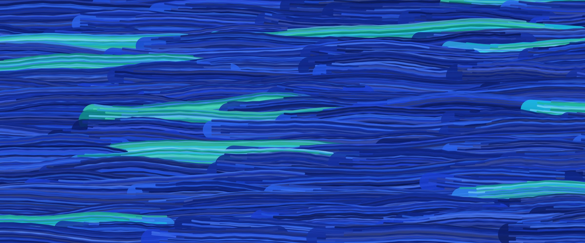
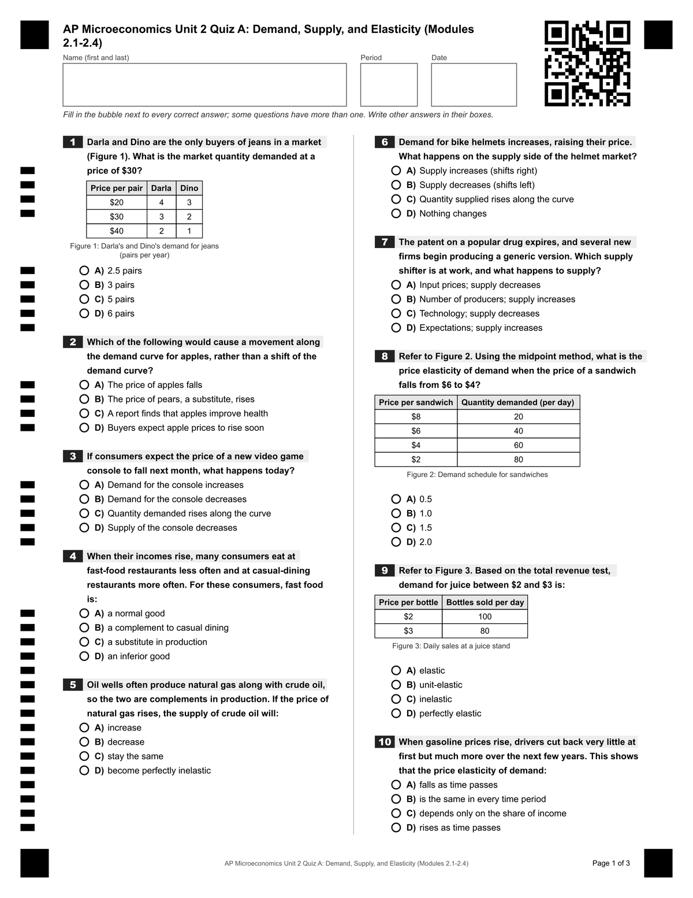
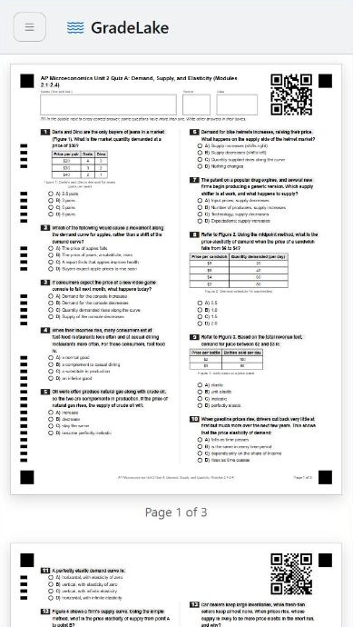
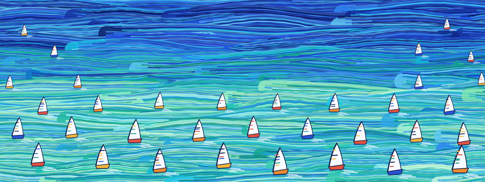

GradeLake turns your test into scannable answer sheets, then reads a stack of scanned or photographed sheets and hands you every grade as a CSV. It handles multiple choice and handwritten free response.
Why GradeLake?
Grading a class set by hand takes an evening. Most grading apps ask you to rebuild your test in their system or buy special forms. GradeLake starts from the test you already wrote.
Bring your own test
Paste or upload your questions as JSON, or save them in your library. Graphs, diagrams and tables print right with the question.
Plain paper, any scanner
Print on US Letter at 100%. Every sheet carries its own QR code, so the grader knows which test and page it is looking at. Scan it or photograph it with a phone.
You stay at the helm
Confirm each name, settle unclear marks and adjust any written-answer score before a single grade is exported.

How it works
- 1
Generate
Load your test in the Sheet Generator and print a sheet for every student, or print a separate answer sheet so the question pages can stay stapled while only the answer sheet is handed in.
- 2
Scan
Students mark their answers and write any free responses in the boxes. Scan the stack, or snap photos, and upload the images.
- 3
Grade
Review the flagged items, apply a curve if you want one, and download a CSV with a score for every student.
Try the sheet generator
Edit this little quiz and watch the printable sheet change. It is the same generator you use for a real test, running right here in your browser.
That's the most the demo holds. The full generator takes up to 16 pages.
Loading the generator…
Core features
Sheet Generator
Scannable answer sheets in two columns, with optional separate answer sheet, ready to print or download as a PDF.
Multiple choice
Two to eight choices, single or multiple correct answers, and a different point value for each question.
Free response
Students write in a box. GradeLake transcribes the handwriting and grades it against your model answer and rubric.
Graphs and tables
Put SVG graphs, diagrams and tables beside any question. They print identically in the preview and the PDF.
Review and curve
Check names, unclear marks and written answers, then curve selected questions before exporting.
Library and sharing
Keep tests in groups, and publish the ones you want to share so other teachers can copy them.
See it on a real exam
An AP Microeconomics Unit 2 quiz, generated in the Sheet Generator with its graphs and tables in place.


Questions, answered
What kinds of tests can GradeLake grade?
Multiple-choice questions, including questions with more than one correct answer, and handwritten free-response questions. Questions can include graphs, diagrams and tables, and each question can be worth a different number of points.
How does GradeLake grade handwritten answers?
GradeLake crops each answer box, has an AI model transcribe the handwriting, then has an AI model compare the transcript with your model answer and rubric and award whole points. You can review every written answer and change its points before you export.
Do I need special paper or a special scanner?
No. Print the answer sheets on ordinary US Letter paper at 100% scale. Students fill in bubbles with a pencil or pen, and you scan the sheets or photograph them with a phone.
Can I check the results before I export them?
Yes. GradeLake shows each student's name as read from the sheet, any marks it can't call, and every written answer for you to confirm or correct. You can also apply a curve to selected questions.
What does GradeLake cost?
You can create an account, build answer sheets and keep a library of your tests on the free plan. Grading scanned sheets needs a Pro plan.
Is student work sent to an AI service?
Bubbles are read by GradeLake itself. Images of the name box and of handwritten answers are sent to AI models so they can be read and graded.
